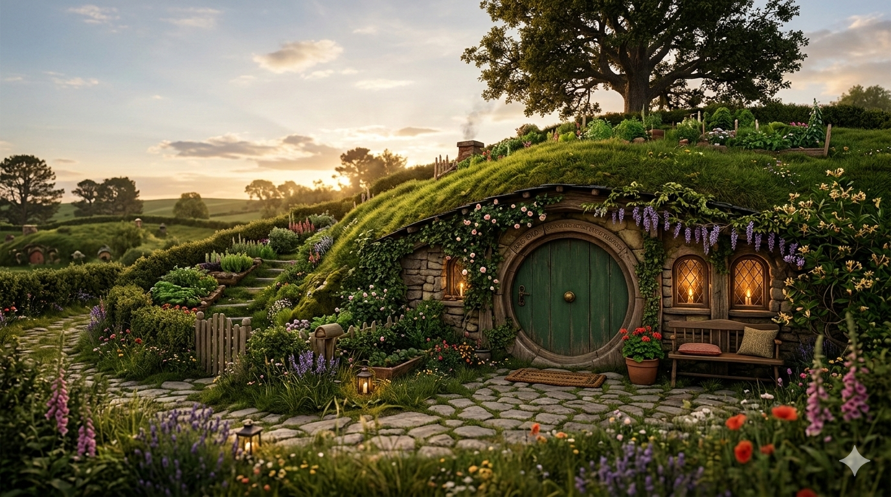

"Em um buraco no chão, vivia um hobbit. Não um buraco úmido, sujo e escuro... era uma toca de hobbit, e isso significa conforto."
Um jardim tranquilo repleto de ervas aromáticas, flores silvestres e a promessa de dias ensolarados com um cachimbo de erva-do-pé-de-dragão.
Prateleiras do chão ao teto, com mapas de terras distantes, tomos de história e histórias de aventuras que nunca foram vividas... ou foram?
Seis refeições por dia, todas com pão fresco, queijo maturado, mel dourado e a melhor cerveja do Shire — a hospitalidade é lei aqui.
"É uma coisa perigosa, Frodo, sair pela sua porta. Você pisa na Estrada, e se não mantiver os seus pés, não há como saber até onde você pode ser varrido."
Redonda como um portal para outro mundo, pintada de verde floresta com uma maçaneta de latão dourado bem no centro — sempre destrancada para amigos.
Do banco de pedra na entrada, vê-se o vale de Hobbiton ao entardecer, com fumaça subindo das chaminés e o som distante de risadas.
De vez em quando, um mago de chapéu cinza aparece pela vereda. Nunca se sabe o que — ou quem — ele traz consigo na próxima vez.